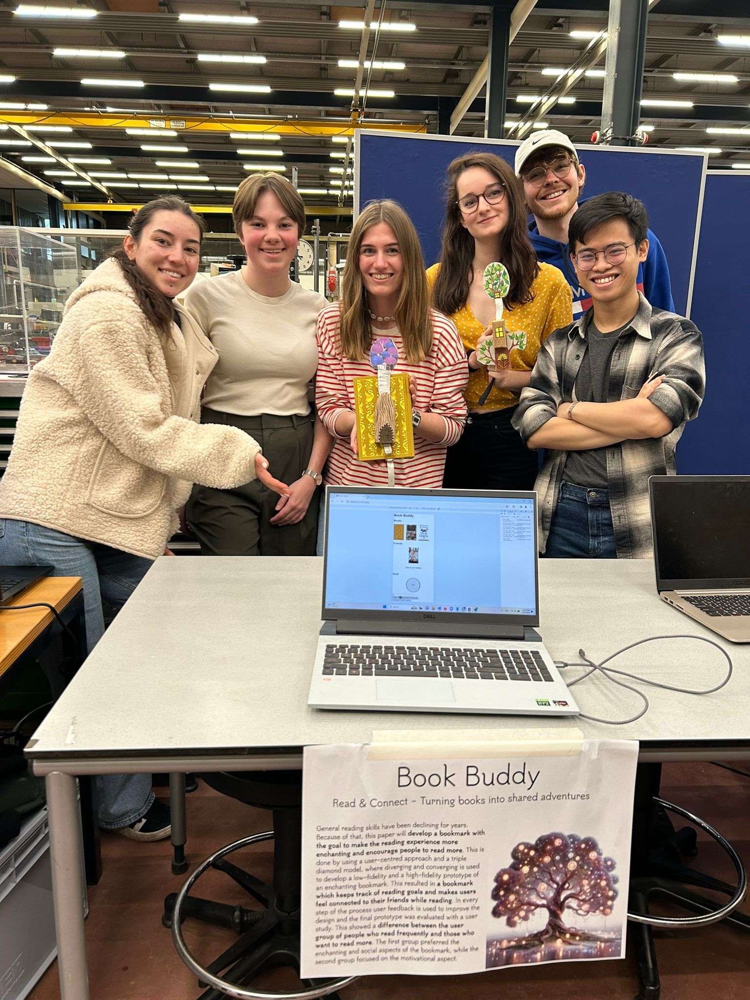
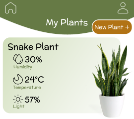

Book Buddy - Enchanting a Bookmark
Annika Boekenstijn, Florence Herrent, Lili Tordai, Minh Tran, Nina Kersting, Rens Hassfeld
- A smart bookmark designed in the shape of an enchanting tree to designed for both readers and non-readers by tracking reading goals and fostering a sense of connection with friends while reading.
- The bookmark features LED indicators to display reading progress, haptic feedback to signal when a friend starts reading, and a companion app for goal tracking and social interactions.
- Based on the evaluation, the social aspect is highly appreciated; the bookmark appeals to the readers for its enchanting design, and the non-readers for its motivational features.

Alfredo’s Kitchen - A Serious Game for Food Safety Training
Lisa Groen, Eva Kato, Nina Kersting, Gianluca Pepe, Gianmarco Picarella, Minh Tran, Tijmen Verhoef
- A serious game developed using the Unity Engine to teach players restaurant/kitchen safety principles through fun and interactive modules based on existing industry standards.
- Play-test evaluation of the first implemented module suggests that the game helps with knowledge acquisition and that the player’s experience is characterized by having to take quick and accurate actions as designed.

Avocado Connect - Interactive Dashboard for Avocado Information
Asher de Jong, Isabel A. Floor, Isabel M. Fuhs, Marie Anbinderyte, Minh Tran
- An interactive data visualization platform that focuses on U.S. avocado sales and distribution based on HASS Avocado Board's dataset.
- Visual maps and graphs are designed to meaningfully convey core information, especially avocado prices and quantity sold between different types of avocados and cities over the period of 2021-2023.
- Users can select, adjust, and filter data categories such as avocado type, sales unit, cities, and time.

Plant Buddy: A Plant Care System for Enthusiasts
Martin N. Tjon, Sarah Tol, Lili Tordai, Minh Tran, Sabrina Türker
- A design for learning platform that teaches hobbyists to care for plants by combining self-reports (journals, quizzes) with sensor data (light, soil, humidity, temperature), offering personalized guidance and feedback.
- The system models user skills, tailors personalized plant recommendations, adapt learning materials, and provides real-time feedback for teaching purposes.

Personality and Stress: Analyzing Social Media Usage's Stress through the Big Five Mode
Minh Tran, Yangfan Chen
- A quantitative research on how stress is affected by personality when using social media by analyzing a dataset consisting of 77 participants’ phone activities, bio-signatures, and self-reported measurements.
- By using regression analysis, results suggest a higher likelihood of stress, represented as heart-rate variability and electrodermal activity, when using social media for a person with high Conscientiousness and high Openness.